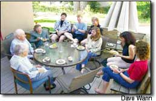
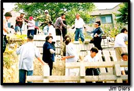
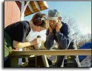
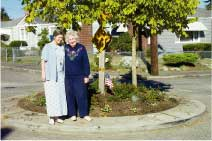

Form Book Clubs and Discussion Groups
Who’s Doing It: Harmony Village, Golden, Colo.; Olde Hillcrest Neighborhood Association, Milwaukee, Wis.
The Way It Works: At Harmony Village, nearly a dozen neighbors meet once a month over breakfast to discuss local and global environmental issues. Olde Hillcrest Neighborhood Association, in the suburbs of Milwaukee, sponsors a neighborhood book club.
How to Get Started: Discussion groups are often sparked by one or two people who announce their interest. For environmentally oriented discussion groups, check out the work of the Northwest Earth Institute, ( www.nwei.org), which has started more than 300 discussion groups throughout the United States.
Other Bright Ideas: Starting neighborhood potlucks, a community bulletin board or a neighborhood watch program are all simple ideas that can help people get to know each other better.
Plant a Community Garden
Who’s Doing It: Communities across the United States and Canada, including Golden, Colo., and Seattle.
The Way It Works: Neighborhood groups are joining together to turn weed-infested and trash-filled vacant lots into garden spaces. Planting fruits and vegetables brings together people of different ages and backgrounds, and helps to build a more sustainable world by reducing the amount of fuel needed to transport food from farm to table.
How to Get Started: The American Community Gardening Association has a Web site, www.communitygarden.org, with a wealth of information about starting a community garden. You also can find local garden or horticultural societies by contacting a nursery in your area or by calling your cooperative extension office.
Other Bright Ideas: Create centrally located compost piles and recycling bins, plant trees and shrubs for fruit and to create wildlife habitat, and take down privacy fences to create more open space.
Create a Neighborhood Work-share Program
Who’s Doing It: L.A. Ecovillage, Los Angeles; North 9th Avenue Neighborhood, Tucson, Ariz.; Highline Crossing, Littleton, Colo.
The Way It Works: Neighbors hold work parties for projects that benefit the entire community. Work-share agreements also can develop as a rotating series of projects that benefit individual households. In some groups, neighbors receive credits for every hour they work on a project, and the house with the most credits calls the next work party.
How to Get Started: Starting with some of the simpler steps to building community, such as organizing regular neighborhood potlucks, can make it much easier to get a work-share program started later. It also may be useful to research co-housing communities, which often include work-share programs and can be good resources for finding out what does and doesn’t work.
Other Bright Ideas: Start a neighborhood babysitting co-op; many operate on the same principle of collecting and using work points.
Slow Traffic to Make Busy Streets Safer
Who’s Doing It: Sellwood Neighborhood, Portland, Ore.; Gossgrove Neighborhood, Boulder, Colo.; The Netherlands.
The Way It Works: Traffic calming is designed to slow cars traveling through residential neighborhoods, to make roads safer and more pleasant, as well as more accessible to pedestrians and bicycles. It relies on simple alterations to streets and roads, including intentional narrowing of streets or placing traffic circles at intersections. Many measures, such as flowers in a traffic circle, also can alter the psychology of drivers, making them less aggressive and hurried.
How to Get Started: The success of these projects depends on well-conceived plans and requires an entire community to “buy-in” to the idea. Resources that can help include David Engwicht’s book Street Reclaiming, and Web sites such as www.livingstreets.org.uk and www.cityrepair.org .
Other Bright Ideas: Create neighborhood carpools and van pools, and organize as a group to support public transportation.
Living in a neighborhood where people work together and practice more relaxed, environmentally friendly lifestyles pays off in reduced household expenses and lighter workloads.
|
 Members of this discussion group at Harmony Village, Golden, Colo., talk about how to make their homes more energy-efficient. |
 Neighbors in Seattle work together to build a community garden. |
 Helping neighbors can be as casual as recruiting neighborhood children to help with a project, or as organized as a formal work-share group. |
|
 These two Seattle residents share their love of gardening by maintaining the flowers at this traffic circle, which slows cars traveling through their neighborhood. |
|
|